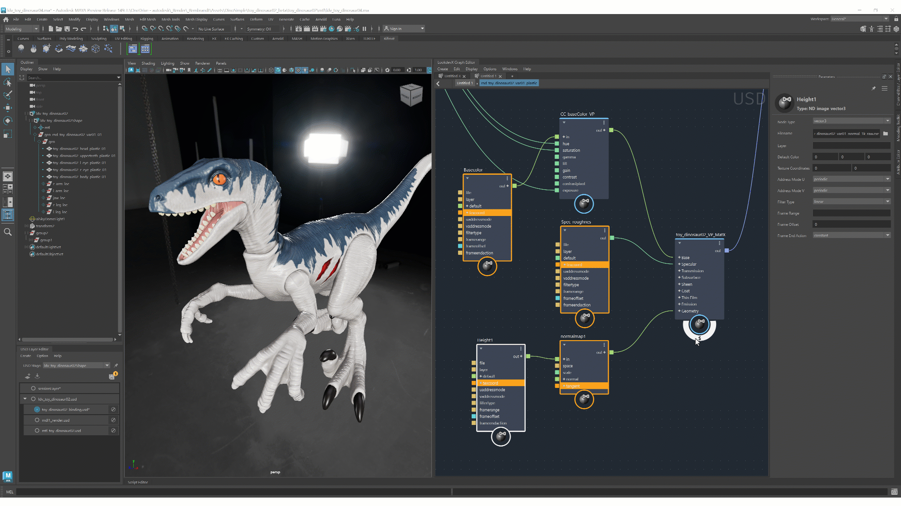
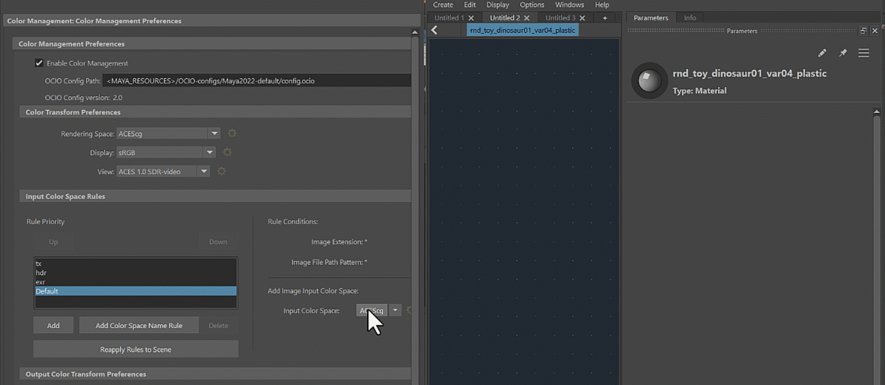
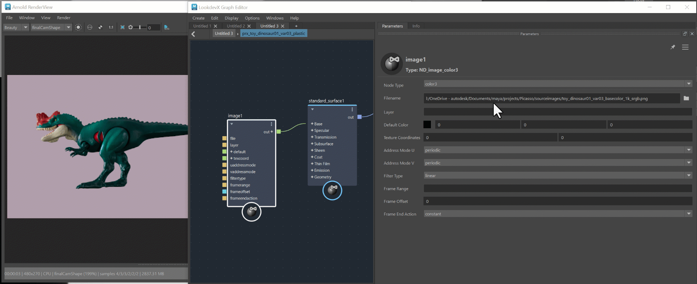
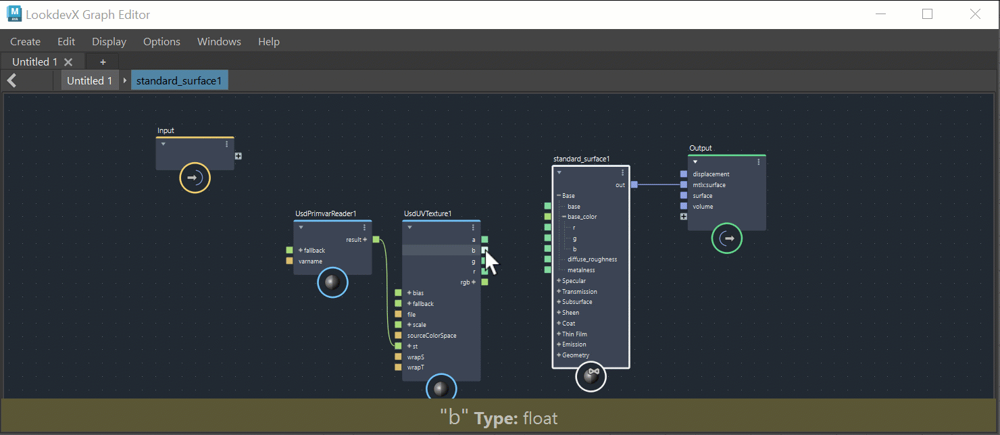
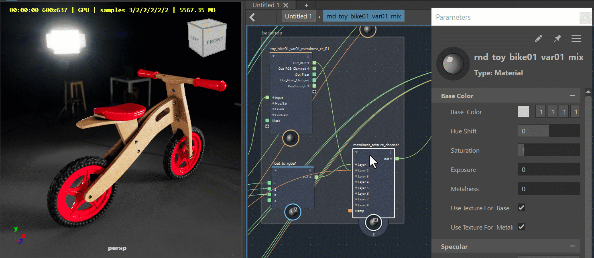
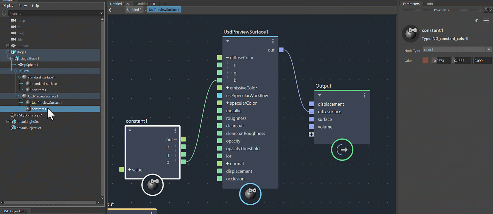
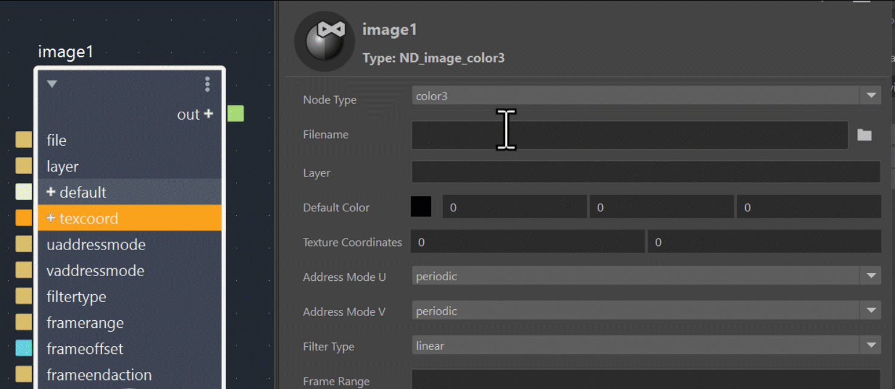
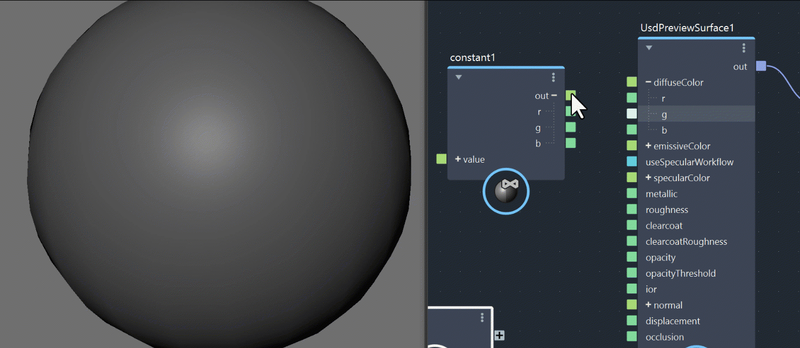
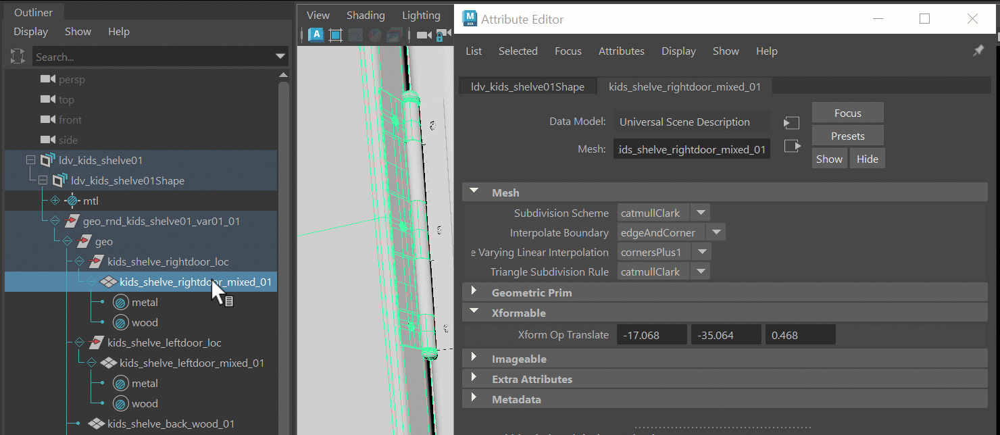
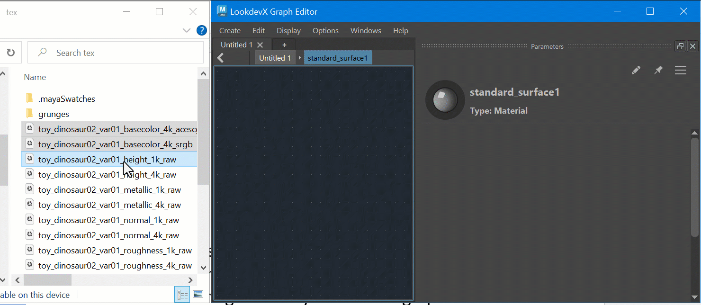

LookdevX 1.2.0 introduces a variety of new features and a range of UX improvements.
Solo Nodes:
Soloing enables faster lookdev workflows and efficient graph troubleshooting. By soloing a node in the graph, you can inspect the render of its upstream nodes. This feature supports both Arnold and MaterialX graphs, including materials, shaders and compounds.

LookdevX Graph Controlled by DCC's Color Management Preferences:
You can now trust the color accuracy as all color management operations are controlled by DCC color manager. This includes: input color spaces for textures, color pots, color picker and color swatches. Furthermore, Color Management data is precisely embedded in USD files and can be read from them accurately.

USD Relative Paths Integration:
Through the USD for Maya plug-in, you can now use relative paths in your LookdevX workflows. You can easily switch between Relative and Absolute paths with a single click.

Error Messaging:
LookdevX graph provides a robust error recovery workflow. Using Nodes as a messaging tool, it pinpoints problematic nodes or connections. You can also find detailed explanations of errors listed in the LookdevX info Bar.

USD Smart Signaling:
Moving nodes or backdrops in the LookdevX Graph Editor triggers the smart signaling, which notifies the rendering engine not to initiate a new rendering process. This prevents unnecessary rendering restarts and ensures an uninterrupted workflow. This feature supports a variety of third-party renderers.

Copy, Paste & Duplicate Nodes and Materials:
You can now perform copy, paste, and duplicate operations using the Outliner and LookdevX toolsets. Moreover, you can duplicate with or without the connections.

Dynamic Port Workflow:
You can now enjoy a streamlined shader creation workflow. Instead of multiple separate shaders, there is now one unified shader. Within the parameters panel, you can select their desired shader type. If there are any issues with the type selection, intuitive error messages help you find the right shader type by highlighting the problematic node and providing a detailed explanation in the info panel.

Shader Component Workflow Support:
You can delve into more advanced graphing using the integrated component workflow.

Component Tags – Direct material assignment:
You can now assign materials to native USD Geometry subsets with confidence. When a USD geometry is converted to a Maya geometry and vice versa, any material changes made on either data model will be accurately preserved.

Drag and Drop:
You can now drag and drop files from an external file browser.

Backdrop: Backdrops are organizational nodes that enhance the readability and usability of graphs. They offer a range of functions compatible with various data formats.
Enums Supported in Property and Attribute Editors: LookdevX Parameters panel now supports integer enums in the dropdown menu.
Context Sensitive Tab search: You will now see a context sensitive list with only surface nodes when accessing the Tab menu at the top level.
LookdevX Tabs: Tab states are saved in a Maya scene.
Expand and Collapse Groups: All sibling groups in the LookdevX Parameters panel can be expanded and collapsed simultaneously using Shift-click.
Input/Output Node Locations: Locations of the Input/Output nodes are now remembered in LookdevX Graph Editor.
Node Placement upon Creation: Newly created nodes now appear in a more predictable location.
Debugging: You can now print the underlying data of a node or the error message by right-clicking a node in LookdevX and selecting Print to Script Editor.
Auto Expand Node Groups: Auto Expand delay is tuned to 100ms.
Renaming: You can now rename nodes using the Enter key.
MacOS: Fix crash when using "L" layout with backdrops LOOKDEVX-1315
Remove "show in lookdevx" hardcoded command name LOOKDEVX-1321
Tab states were not saved in the Maya scene LOOKDEVX-1314
Compound: UI ports order not respected on reloading USD file LOOKDEVX-1289
Crash when making port connections on renamed/moved ports LOOKDEVX-1290
The internal shader nodes are now connected to the output of the material when creating a material in the graph at the top level LOOKDEVX-1295
Show in LookdevX context action not exposed in Primitive Geom Prims LOOKDEVX-1337
Moving nodes and backdrops should be undoable LOOKDEVX-1316
Tabs order is not preserved when saving and reopening the Maya scene LOOKDEVX-1358
MayaUSD notifcations sometimes not being sent after loading tabs from Maya scene LOOKDEVX-1367
Show in LookdevX in inactive tab does not set focus on selected tab LOOKDEVX-1270
Creating Materials via Tab menu in Editor opens material in new tab, not the current one LOOKDEVX-1366
When using tab menu at material level, nodes are not automatically graphed LOOKDEVX-1349
Installer: Lowercase OS/X installer fails to install LOOKDEVX-1384
Drag/drop images on the material level crashes Maya LOOKDEVX-1379
Backdrop names are reformatted on reload LOOKDEVX-1327
Maya Crashes when accessing the tab menu in LookDevX Graph on Linux LOOKDEVX-1370
Crash when deleting nodes from saved files LOOKDEVX-1501
Right-clicking a prim in the viewport that has no material directly assigned to it should not trigger the "Show in LookdevX" menu LOOKDEVX-1348
Invalid connection when deleting and Undoing a node LOOKDEVX-1447
Compound ports will connect to itself LOOKDEVX-1448
Compounds: auto-numbering not propagated to parameters and AE LOOKDEVX-1132
"Show in LoookdevX" not working on all tiers of the hierarchy LOOKDEVX-1385
Compound : Hide port command is not added to the undo list when created. LOOKDEVX-1185
Moving Input/Output nodes should be undoable. LOOKDEVX-1425
Removed security warning when loading a scene without any assigned materials LOOKDEVX-1429
Undo create backdrop/compound fails after deleting selected node. LOOKDEVX-1396
Refresh issues with UFE when loading the scene for the first time EMSUSD-248
While USD layer editor is opened, edited stage stays in memory when reloading the file without saving it EMSUSD-217
Undoing after running IPR crashes Maya LOOKDEVX-1440
Lack of typeless mechanism for Gltf image nodes LOOKDEVX-1884
Nodes in the graph do not automatically update the error border or highlight LOOKDEVX-1921
Changing node type breaks some of the default settings of the parameters LOOKDEVX-1997
Renaming a connected port is unstable LOOKDEVX-2007
Moving connected nodes in the outliner breaks their connections. This action should be disabled. LOOKDEVX-1827
Current default for texcoord node type is vector 3; it should default to vector2 for compatibility with the image node's 2-component texture coordinates. LOOKDEVX-1976
The solo connection to the output node remains after deleting a soloed node, which causes validation errors. LOOKDEVX-2104